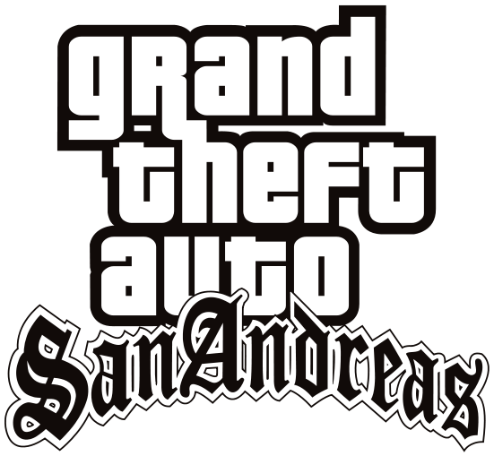

Grand Theft Auto: San Andreas é um jogo eletrônico de ação-aventura desenvolvido pela Rockstar North
e
publicado pela Rockstar Games. É o quinto título principal da série Grand Theft Auto e foi lançado
em
outubro de 2004 para PlayStation 2 e em junho de 2005 para Xbox e Microsoft Windows. O jogo se passa
no
estado ficcional de San Andreas, com a história seguindo Carl Johnson em sua luta para lidar com
guerras de
gangues, confrontos com policiais e as relações com sua família e amigos. O mundo aberto permite que
os jogadores
naveguem livremente pelas áreas rurais e urbanas de San Andreas.

Counter-Strike: Global Offensive (CS:GO) é um jogo online desenvolvido pela Valve Corporation e pela
Hidden
Path Entertainment, sendo uma sequência de Counter-Strike: Source. É o quarto título principal da
franquia.
Foi lançado no dia 21 de agosto de 2012 para as plataformas Windows e Mac OS X no Steam, Xbox 360
(por meio
da Xbox Live Arcade), e uma versão exclusiva para os EUA para PlayStation 3 (por meio da PlayStation
Network).
A versão de Linux foi lançada em setembro de 2014 (com suporte para o sistema Ubuntu a partir da
versão 12.05).
O jogo conta com conteúdo clássico de tiro, como versões retrabalhadas de mapas clássicos, bem como
novos mapas,
personagens e modos de jogo.[2] O sistema multiplayer multi-plataformas foi planejado entre
jogadores de
Windows, OS X, Linux e PSN, mas acabou excluindo o PSN por causa das diferenças na frequência de
atualização
dos sistemas.[3][4] A versão da PSN oferece três formas de controles, que inclui DualShock 3,
PlayStation Move e é fizero experimenta.
Minecraft é um jogo eletrônico sandbox de sobrevivência criado pelo desenvolvedor sueco Markus
"Notch"
Persson e posteriormente desenvolvido e publicado pela Mojang Studios, cuja propriedade intelectual
foi
obtida pela Microsoft em 2014. Lançado inicialmente em maio de 2009 como um projeto em
desenvolvimento,
seu lançamento completo ocorreu em novembro de 2011 para Microsoft Windows, macOS e Linux, sendo
posteriormente
relançado para uma ampla variedade de plataformas. É o jogo mais vendido de todos os tempos,
vendendo mais de
200 milhões de cópias em todas as plataformas até maio de 2020, com mais de 126 milhões de jogadores
ativos
mensalmente.
{kind=link}